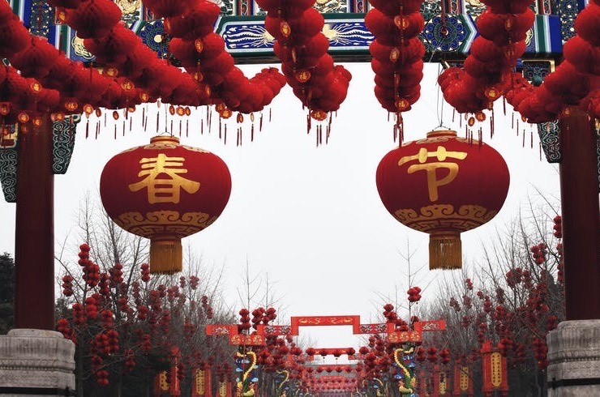
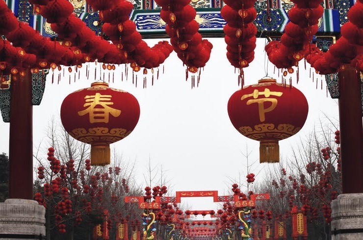

Chinese New Year is one of the most well-known Chinese celebrations. This day marks the start of the new year on the Lunar. The date of the celebration constantly changes, usually in late January or early February. In Chinese, it is called "Chunjie"which means "Spring Festival."
Chinese: Celebrations and Customs
 



- Firecrackers set off at midnight to scare off a monster called "Nian" that originates from a myth and to keep away bad luck. Firecrackers are also used again in the morning to welcome the new year and good luck.
- Red clothing and decorations are worn/put up to also scare off the monster, Nian. Additionally, new clothing is bought as it also is thought to bring good luck.
- This celebration lasts for 15 days (16 if you count New Year's Eve)
- Some people believe that one should not shower on New Year's Day. It is also believed that you should not sweep or throw out the garbage before the fifth day of the celebrations. This is all to ensure that you do not wash away the good luck.
- On Chinese New Year, red packets ("Hongboa") containing money are passed outs. This is usually given from elders to the children as it is supposed to help transfer fortune, but it's also exchanged between bosses and employees, co-workers, and friends.
- During this celebration, my family along with our family friends usually hold a series of large parties. Each party takes place in a different person's house. We don't always have firecrackers, but we still put up the decorations, eat special food, and hand out red packets at every party. We sometimes go to China to celebrate if we have the time. Even if we can't visit our family, we still send virtual red packets which we "snatch" and we also wish each other "xin nian kuai le" or “gong xi fa cai”
Every year, Chinese New Year's celebrates a zodiac animal. There are 12 zodiac animals, one for each year. The next Chinese New Year's festival in 2021 will be celebrating the year of the rat. These zodiacs also represent traits given to the people born in their year.
- It is believed that your "benming year" (year of your zodiac animal) is the unluckiest year for you, but it is also your rebirth year.